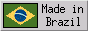

txt2tags: Text formatting tool, simple, Linux/Mac/Win, CLI/Web/GUI, Python, GPL, since 2001
- Info
- Markup Demo (hot)
- Text -> HTML
- Screenshots
- Web Interface (hot)
- Documentation
- Download
- Latest Version (2.3)
- ChangeLog
- Timeline
- Community
{kind=link}


O>OOOO

Aurelio Marinho Jargas
txt2tags author



- 2005-12-26: Writing Books translated to Spanish
- Antoni Serra Devecchi has translated the Writing Books to Spanish. See Documentation page.
- 2005-09-28: Czech translation combo
- Spotlights on, it's Vlastimil Ott show time! He translated at once the Sample File, Markup Demo and Quick Reference documents to Czech. See Documentation page.
- 2005-09-05: User Guide translated to German
- Andreas Deininger has translated the big User Guide to German. See Documentation page.
- 2005-08-12: Txt2tags project and donations
-
After 4 years of txt2tags, donations are now turned ON. SourceForge
has a nice built-in donate feature (via PayPal), so I thought "Why
not?". If you like to donate to Open Source software,
now you can. If you don't, just ignore the Donate
button.
FAQ: Nothing changes. Txt2tags will never be paid-software. I don't expect to become rich. The site won't be spammed with Donate buttons. Txt2tags continues to be a one-man spare-time project, with the help of many volunteers. - 2005-08-05: The Txt2tags Team Gallery
- As you may have noticed by the latest news, the translators are working very hard, even fighting the big 50-page User Guide. Doing so, they have their nice happy picture placed on the brand-new Txt2tags Team Gallery. Don't miss this link, see them all! But I'm wondering... Why they keep translating even when their picture is already there? Maybe they are trying to impress Fabianne, the only girl on the team? ;)
- 2005-07-21: RSS feed for txt2tags news
- Now you can be notified of txt2tags news using the site's RSS feed. Please don't abuse the refresh rate, "1 day" should be enough. Nerd Note: the feed is generated from a SED script that parses this page.
- 2005-07-11: Wanna contribute to the txt2tags project? Translate!
- Check out the new Documentation page, now with links to the document sources and instructions on how to translate them. The most important documents are the shorter, so it is very quick to make a translation. Do you have some 15 or 30 spare minutes? Help us!
- 2005-07-11: New document: Quick Reference
- There is a new document to help novice and experienced txt2tags users, the Txt2tags Quick Reference. It is a one-page PDF ready to print and stick to a wall around your desk. Don't think, download :) Thanks José Inácio Coelho da Silva, Leslie Harlley Watter and Christof Böckler for making their own quick references which inspired this one.
- 2005-06-17: Released 2.3 version
-
Guess what? New txt2tags release! After some months of silence, the red octopus rises again. This time there are new command line options --dump-source and --config-file, and a really nice table column span feature. You are a long time txt2tags user? So you will appreciate the new "Markup Rules" document. English is not your mother tongue? Maybe you should try the documents translated to French, Chinese and Hungarian. Read more about the news and download the new version!
About txt2tags
Txt2tags is a document generator. It reads a text file with minimal
markup as **bold** and //italic// and converts it to the
following formats:
- HTML document
- XHTML document
- SGML document
- LaTeX document
- Lout document

- UNIX man page

- MoinMoin page (wiki)
- Magic Point presentation (mgp)
- PageMaker 6.0 document
The program follows the sacred KISS principle ("Keep It Simple, Stupid"), being a simple, fast-learning and easy-to-use tool. Read more...
About this Site
All the pages of this site are generated by txt2tags. The source files
are also available, just change the .html extension by .t2t on
the page URL. See the source of this one. The appearance
config is made on this CSS file.
See Also
- txt2regex: Console regex wizard
- sedsed: The SED debugger
- sokoban.sed: The Sokoban game written in SED!